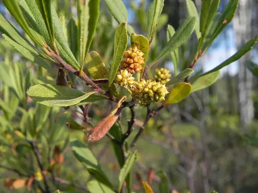
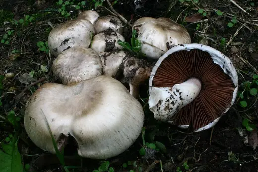
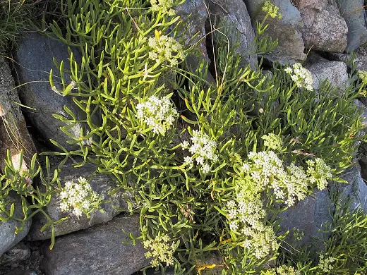

Wild food recipes from Ireland
39 dishes made with foraged ingredients, from drinks and preserves to mains and desserts.
Drinks
 Elderflower cordialElderflower
Elderflower cordialElderflower Sloe ginSloe
Sloe ginSloe Nettle teaStinging nettle
Nettle teaStinging nettle Rose hip syrupRose hips
Rose hip syrupRose hips Meadowsweet cordialMeadowsweet
Meadowsweet cordialMeadowsweet Gorse flower cordialGorse flowers
Gorse flower cordialGorse flowers
Bog myrtle and heather beerBog myrtle, Heather flowers
Starters & snacks
 Mussels in ciderBlue mussels
Mussels in ciderBlue mussels Periwinkles with a pinPeriwinkles
Periwinkles with a pinPeriwinkles Dillisk crispsDulse
Dillisk crispsDulse- Elderflower frittersElderflower
 Puffball steaksGiant puffball
Puffball steaksGiant puffball Steamed alexanders with butterAlexanders
Steamed alexanders with butterAlexanders Pan-fried razor clamsRazor clams
Pan-fried razor clamsRazor clams
Field mushrooms on toastField mushroom Crispy fried gutweedGutweed
Crispy fried gutweedGutweed
Sauces, preserves & sides
 Wild garlic pestoWild garlic
Wild garlic pestoWild garlic Blackberry jamBlackberry
Blackberry jamBlackberry Rowan and crab apple jellyRowan berries, Crab apple
Rowan and crab apple jellyRowan berries, Crab apple- Hedgerow jellyBlackberry, Rose hips, Sloe, Hawthorn, Crab apple
 Chanterelles on toastChanterelle
Chanterelles on toastChanterelle
Pickled rock samphireRock samphire Pepper dulse seasoningPepper dulse
Pepper dulse seasoningPepper dulse
Main course
- Nettle soupStinging nettle
- Wild garlic colcannonWild garlic
 Sea beet and potato cakesSea beet
Sea beet and potato cakesSea beet Chicken of the woods stewChicken of the woods
Chicken of the woods stewChicken of the woods Porcini and barley risottoPorcini
Porcini and barley risottoPorcini Seaweed chowderSea lettuce, Dulse, Blue mussels
Seaweed chowderSea lettuce, Dulse, Blue mussels Cockles and musselsCockles, Blue mussels
Cockles and musselsCockles, Blue mussels Sea spaghetti carbonaraSea spaghetti
Sea spaghetti carbonaraSea spaghetti Wild mushroom and blewit stewWood blewit, Oyster mushroom
Wild mushroom and blewit stewWood blewit, Oyster mushroom
 Carrageen moss puddingCarrageen moss
Carrageen moss puddingCarrageen moss Fraughan tartBilberry
Fraughan tartBilberry Elderflower and gooseberry foolWild gooseberry, Elderflower
Elderflower and gooseberry foolWild gooseberry, Elderflower Damson jamDamson and bullace
Damson jamDamson and bullace